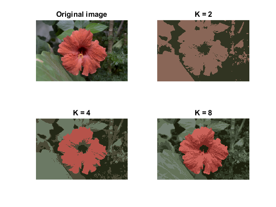

K-Means Color Quantization
We will learn how to use cv.kmeans for data clustering of pixels to perform color quantization.
Sources:
Contents
Theory
Color Quantization is the process of reducing number of colors in an image. One reason to do so is to reduce the memory. Sometimes, some devices may have limitation such that it can produce only limited number of colors. In those cases also, color quantization is performed. Here we use k-means clustering for color quantization.
A color image has 3 features, R,G,B. So we need to reshape the image to an array of Mx3 size (M is number of pixels in image). And after the clustering, we apply centroid values (it is also R,G,B) to all pixels, such that resulting image will have specified number of colors. And again we need to reshape it back to the shape of original image.
Code
Load color image
img = cv.imread(fullfile(mexopencv.root(),'test','test1.png'), ... 'Color',true, 'ReduceScale',2);
reshape RGB channels into Mx3 matrix, and convert to floating-point type
Z = single(reshape(img, [], 3)); whos img Z
Name Size Bytes Class Attributes Z 106400x3 1276800 single img 266x400x3 319200 uint8
define clustering parameters
opts = {'Initialization','Random', 'Attempts',10, ...
'Criteria',struct('type','Count+EPS', 'maxCount',10, 'epsilon',0.1)};perform clustering with various number of clusters
K = [2 4 8]; for i=1:numel(K) % apply kmeans tic [labels, centers] = cv.kmeans(Z, K(i), opts{:}); toc whos centers % Convert centroids back into 8-bit, and rebuild original image % (note that labels are 0-based indices) centers = uint8(centers); out = reshape(centers(labels(:)+1,:), size(img)); % Show quantized result subplot(2,2,i+1), imshow(out), title(sprintf('K = %d',K(i))) end subplot(221), imshow(img), title('Original image')
Elapsed time is 0.222953 seconds. Name Size Bytes Class Attributes centers 2x3 24 single Elapsed time is 0.245025 seconds. Name Size Bytes Class Attributes centers 4x3 48 single Elapsed time is 0.292261 seconds. Name Size Bytes Class Attributes centers 8x3 96 single